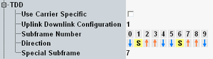

The following parameters configure TDD-specific settings, not relevant for FDD.

Selects whether the UL/DL configuration and the special subframe configuration can be configured individually per component carrier or whether the same settings apply to all carriers.
Option R&S CMW-KS512 is required for carrier-specific configuration.
Remote command:Selects the uplink-downlink configuration of a TDD signal, see Table "Uplink-downlink configuration 0 to 6". Each configuration defines a combination of uplink subframes, downlink subframes and special subframes within a radio frame.
If duplex mode TDD is active, the radio frame structure is displayed for information (lines "Subframe Number" and "Direction").
If a is displayed for a special subframe, it indicates that there is no PDSCH transmission in the DwPTS. This state depends, for example, on the special subframe configuration and on the cyclic prefix.
Option R&S CMW-KS510 and R&S CMW-KS550 are required.
Remote command:Configuration of the special subframes of a TDD signal, as defined in 3GPP TS 36.211, chapter 4, "Frame Structure". Each configuration defines the inner structure of a special subframe, i.e. the lengths of DwPTS, GP and UpPTS.
Value 8 and 9 can only be used with normal cyclic prefix.
Option R&S CMW-KS550 is required. R&S CMW-KS512 is required for value 7 combined with extended cyclic prefix and for value 9.
Remote command: